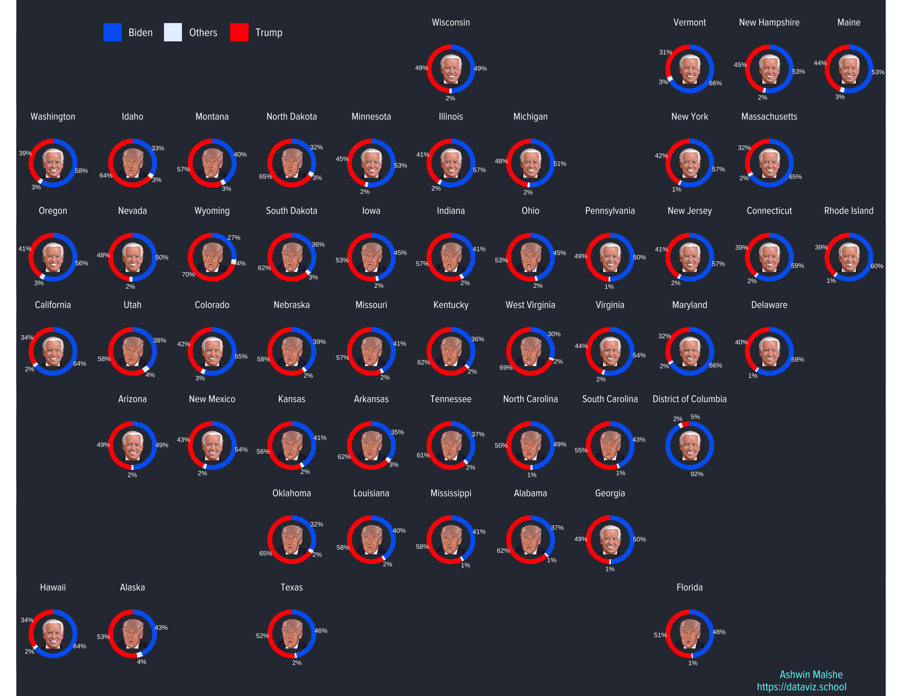

Dataviz Blog
About
Dataviz-Blog-Quarto
Author
Ashwin Malshe
Categories
All
(14)
Elections
(1)
Map
(1)
Shiny
(1)
Utility
(1)
books
(1)
covid
(1)
reading
(1)
My Reading List - 2024
reading
books
This post serves as my public reading list for 2024. I mostly listen to books so this is really an audiobook listening list.
Feb 5, 2024
Ashwin Malshe, Ashwin malshe
Citation Frequency Table
Utility
Shiny
This is a serverless app that lets you upload your Word document and outputs a table of citations frequencies. A serverless app runs entirely in your browser so your…
Feb 4, 2024
Ashwin Malshe, Ashwin Malshe
Analysis of MKT-3031 Spring 2024 Intro Survey
Thank you for taking the survey! As of the end of the day on January 19th, 97 students completed the intro survey. I created a few bar graphs to show you how you responded.…
Jan 20, 2024
Ashwin Malshe
Homework 3 - 2023
Before you begin, note that, in the header, the output format of this document is
html_notebook
. When you save this file, it automatically creates another file with the same…
Oct 26, 2023
Ashwin Malshe
Workaround to Linking RStudio and Github
Many students face difficulties in linking RStudio and Github. This post shows a workaround using Github Desktop application.
Aug 25, 2023
Ashwin Malshe
Installing R and RStudio
This is an old post about installing R and RStudio. It still works.
Aug 8, 2022
Ashwin Malshe
Visualization of monthly NBER paper submissions
This post is a tidytuesday post. See the post below for the data source.
Oct 4, 2021
Ashwin Malshe
Kiyosaki Predicting Stock Market Crash
Robert Kiyosaki is a legendary peronal finace guru, who has sold millions of copies of the book Rich Dad, Poor Dad. Yet, he is also a terrible predictor of the stock market movements!
Sep 27, 2021
Ashwin Malshe
Easy pie charts and donut charts with ggforce
I make pie charts and donut charts in ggplot2 using a combination of a bar plot and polar coordinates. This works fine but polar coordinates prevent using any other geoms or annotations that need Cartesian coordinates. For example, annoatation_raster doesn’t work with polar coordinates. ggforce solves this issue.
Dec 12, 2020
Ashwin Malshe

Donut Chart and Geofacets with Images
In this post, I recreate the donut chart overlaid on geo facets. Based on a friend’s feedback, I now add pictures of winners of each state.
Dec 2, 2020
Ashwin Malshe
Persistence in Mutual Fund Performance
In this article, I reproduce Figure 1 from Mark Carhart’s classic 1997 Journal of Finance article titled “On Persistence in Mutual Fund Performance”. The visualizations are created using highcharter and echarts4r packages. It is an interactive bar plot that shows that there is a very low persistence in the mutual fund performance.
Nov 30, 2020
Ashwin Malshe
Donut Chart and Geofacets
How to combine a donut chart with geofacets in R.
Nov 19, 2020
Ashwin Malshe
Mapping Election Win Probabilities
Elections
Map
I show how to create a election map using ggplot2
Oct 31, 2020
Ashwin Malshe
Plotting Covid-19 Pandemic
covid
In this post, we will visualize spread of worldwide COVID-19 cases through time. I obtained the data from Rami Krispin’s website: https://ramikrispin.github.io/coronavirus/ u…
Mar 8, 2020
Ashwin Malshe, Ashwin Malshe
No matching items